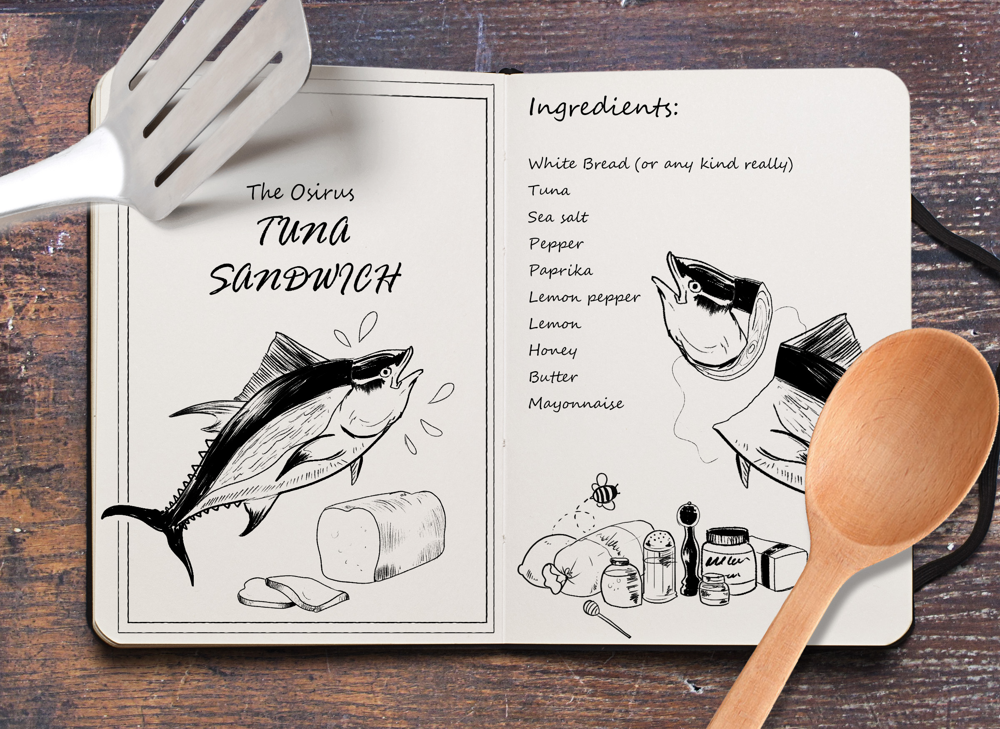
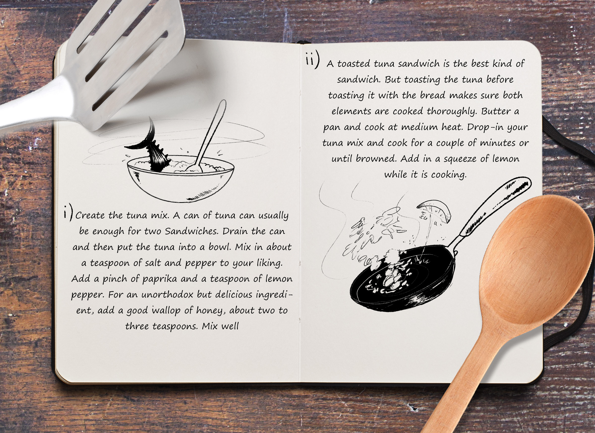
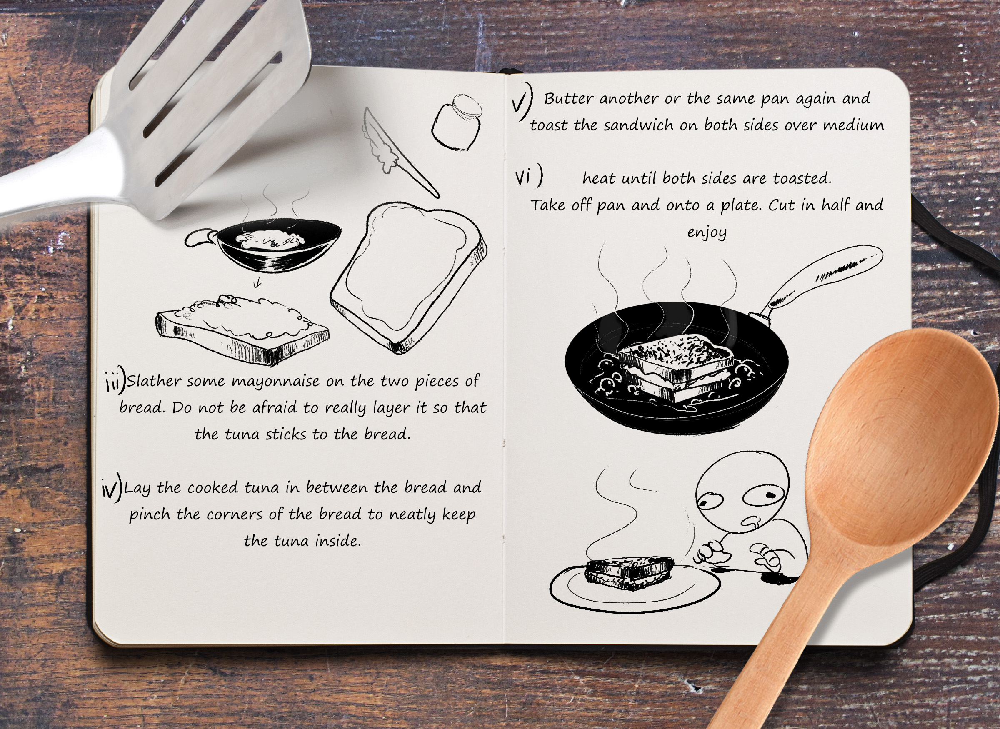
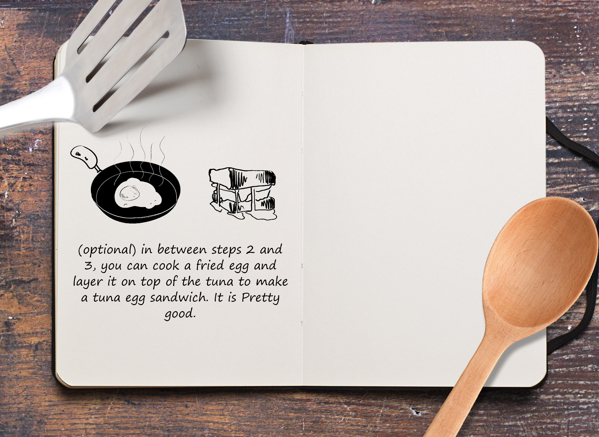

Task 1: Pseudocode an Everyday Task - Create the OSIRIS TUNA SANDWICH

Collect the ingredients:
White Bread
Canned Tuna
Sea Salt
Pepper
Paprika
Lemon Pepper
Lemon
Honey
Butter
Mayonnaise

Prepare the ingredients:
Create tuna Mix
-Mix tuna, salt, pepper, lemon pepper, lemon, paprika, and honey to liking
Cook tuna mix in a buttered pan over medium heat till browned to a liking.
-Add a squeeze of lemon while cooking tuna
(Optional) Prepare a fried egg to add to the sandwich and put it off to the side after completing it.


Assemble the ingredients:
Assemble the sandwich
-Spread Mayonnaise on two pieces of white bread
-Add the cooked tuna mix in between the pieces of bread and neatly pack it together
Toast the sandwich
-Butter a pan and set to medium
-Toast the whole sandwich on both sides until golden brown
Final Preparation
-Take out of pan and place on plate
-(Optional) if you made a fried egg, add it to the top layer of the sandwich now
Cut and half
Eat the sandwich:
Enjoy
Task 2: Pseudocoding a Computer Task
1. Creating a Checkers Game (Against a Computer)
2. Create the game board before each game
3. Create an opponent
4. Establish the player’s color and side of the board
5. Validate user’s possible moves
6. Evaluate possible moves
7. Choose a computer move
8. Create an end/win condition